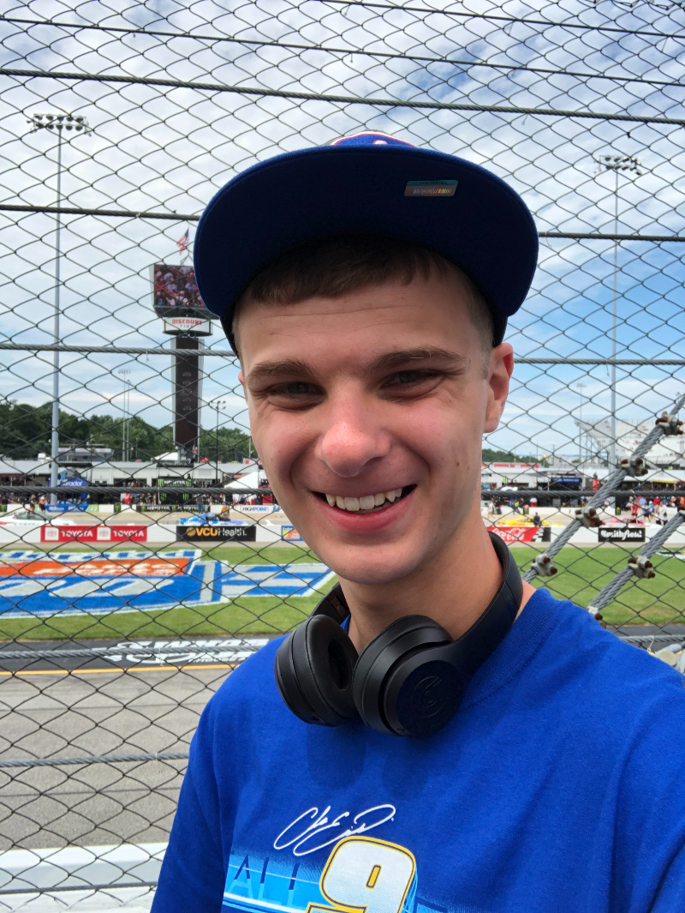
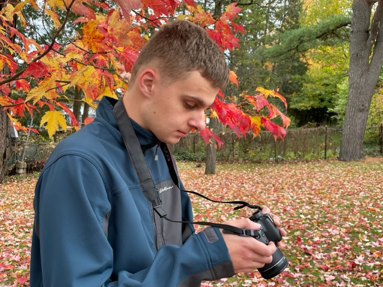

My name is Michael Volk. I am a 21 year old student from Ottawa, Ontario who currently attends Algonquin College in the Interactive Media & Design program. I have excellent attention to detail skills and I'm extremely hard working.
I am a spokesperson for Autism Awareness as I am on the autism spectrum. Taking photos has always been a hobby, but my interest grew after taking a class at Algonquin, which made me explore more elements of photography. I will always do my best to give my clients the most Satisfaction in my products.
